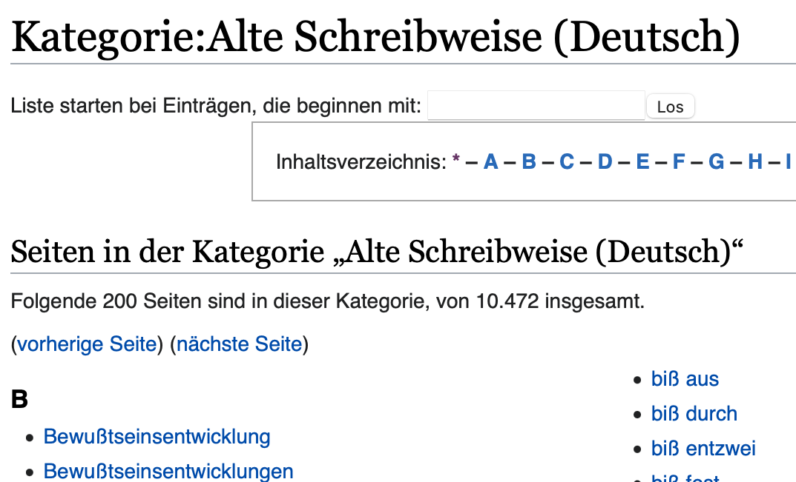

How to Unravel the Perplexity in Kant's Critique of Pure Reason: An NLP Project to Build a Terminology Network
Karen Lyu
Oct 14, 2021
Keywords
• Natural Language Processing (NLP) • Bidirectional Encoder Representations from Transformers (BERT) • Kantian Philosophy
I. Introduction
After reading and studying Kant's Critique of Pure Reason (CPR) for a full year, I could finally have the confidence to say that I understand what Kant's endeavering to do in here. Nevertheless, I could never forget how perplexing the text first appeared to me, and how much hard work it took to unravel the perplexity. It's not sensible to impose this much input of effort on another who doesn't aim to become a Kant scholar, including the students in my class when I serve as a TA for the History of Western Philosophy II – they just need to get the drift of Kantian philosophy and pass the final exam. This way Kantian philosophy would also suffice to be of use to their own philosophical work by providing an inspiration or the like. A few lectures on Kant in this course seem unable to satisfy this need. At least it was the case when I took the same course 2 years ago. As a TA, what could I do to help? My coding skills came to my rescue when I struggled to proceed with German learning. Could them help my students to comprehend Kant as well? There was the incentive for this project born.
In the field of philosophical research, natural language processing (NLP) hasn't been largely employed. To put it forward phiosophically, the specific methods of NLP might themselves rest upon a few problematic prepositions from the outset. For example, if a philosopher decides to utilize Deep Learning models like BERT models to evaluate an argument, they could straightaway be confronted with unsolved conflicts within the field of philosophy of language, e.g. is contextual information in the training materials enough to disentangle the semantics? Isn't it the case that language gains its meaning only in the entirety of the way of life, as Wittgenstein put forward? Nevertheless, I did this project without trying to provide remedy for these difficulties. For it only serves as an index and provides a clue for philosophizing, so that it could help with philosophy study. As for philosophizing itself, it's every philosopher's own work.

The main technology of this project is Bidirectional Encoder Representations from Transformers (BERT). I employed a BERT model (German-cased pretrained) and trained it on Kant's texts from Gutenberg DE. This way I've got the semantic values of important terms. I used the introduction to CPR written by modern Kant scholars to test the credibility of their semantic values. The result came out surprisingly well! Lastly, I built a network of Kant's terminology based on the semantic values.
II. The Tech
P.S. You might want to skim over this part if you don't have any background knowledge. : )
Texts and Preprocessing
1. Acquire the texts: I downloaded the texts from Gutenberg and scraped a few more down from from Gutenberg DE. I paid close attention to the HTML layout of projekt-gutenberg.de, e.g. extra line breaks, to scrape them down to continuous texts.
2. Modernize the old spellings: Some of Kant's texts I acquired comprises old spellings before the orthography reform. I scraped the old spelling pages and their subpages on wiktionary to generate a dictionary of the old spellings and their corresponding modern spelling. The whole dictionary consists of 10469 words.
3. Extract important terms from CPR (B edition): ** CPR (B edition) is considered to be Kant's most important work. Although the training materials comprise more works, my main aim was to build a terminology network of CPR.
• Firstly, I used some traditional methods of NLP with the help of spacy to denote the POS (Part-Of-Speech) tags and reserve the nouns. Then I calculate the frequency of them. ** In my opinion, almost all of Kant's important terms take the form of a noun, or at least have a variation form as a noun. For example, an important verb "erkennen" (cognize) is also expressed as "Erkenntnis" (cognition) in the texts.
• Secondly, using the frequent single-word terms as the base point, I generate a list of multi-word terms. I employed a few linguistic and semantic rules to extract the multi-word terms that serve our need. For example, I removed the multi-word terms that only have one word that belongs to “open class words,” like die Erkenntnis der (the knowledge of).
• Thirdly, I deleted the duplicate terms, like Bedingung (condition), Bedingung der (condition of), and die Bedingung der (the condition of), that is, if a term's only difference to another is extra “closed class words”, I see them as duplicates.
• Lastly and most importantly, I calculate the C values of each term. I chose C value as the denotation of statistical significance, because it allocates weight to the length of a term. Thus, it compares the importance of a single-word term with that of a multi-word term more fairly than simple frequency does.
Finally, 55 terms with the largest C values are picked out: Begriff, Vernunft, Gegenstand, Erscheinung, Erfahrung, Anschauung, Bedingung, Ding, Erkenntnis, Dinge an sich selbst, Idee, Einheit, Vorstellung, Raum, Antinomie der reinen Vernunft, Ursache, Natur, Grund, Satz, Begriffe a priori, Möglichkeit, Objekt, Wesen, Grundsatz, Ansehung, Grundsätze des reinen Verstandes, Reihe, Prinzip, Synthesis, Art, Urteil, Gesetz, Regel, Bestimmung, Gebrauch, Welt, Sinn, Verstand, Form, Substanz, Erkenntnis a priori, Wahrnehmung, Kategorie, Realität, Kritik der reinen Vernunft, Verhältnis, Verstandes, Beweis, Prinzip der systematischen Einheit, Gegenstände möglicher Erfahrung, Grenzen möglicher Erfahrung, Sinnlichkeit, Subjekt, Bedingungen der sinnlichen Anschauung, System der reinen Vernunft
4. Sentence segmentation: Based on spacy parsing. Although spacy's model for German NLP is trained on modern texts, it functions pretty well with regard to parsing.
5. the important terms with meaningless markers:
This move is based on the following assumption: as regards terminology, Kant's use of words is so different from the everyday meaning of it that the embedding of those words in the pretrained model is more of an interference than information. So when we replace the terms with meaningless markers from “<N0>” to “<N54>”, the model could get to their correct semantic values more quickly.
This assumption is endorsed by how the pretrained model perform regarding predictions for masked terms in the Introduction to Critique of Pure Reason (1998). The percentage of its correct predictions on the terms which appear more than 10 times is listed below:
• Begriff: 0.000 (0 correct out of 10)
• Vernunft: 0.360 (18 correct out of 50)
• Gegenstand: 0.200 (2 correct out of 10)
• Erfahrung: 0.040 (1 correct out of 25)
• Bedingung: 0.118 (2 correct out of 17)
• Erkenntnis: 0.000 (0 correct out of 10)
• Möglichkeit: 0.000 (0 correct out of 11)
• Urteil: 0.050 (1 correct out of 20)
• Welt: 0.182 (2 correct out of 11)
Besides better semantic performance, this move also allows us to handle a multi-word term as a unity, preventing it from being tokenized into a few tokens. And thus, we can get the semantic value of this unity.
Training, Testing, and the Excellent Result
Before training:
• I used a German-cased pretrained BERT model as the basis for further training on Kant's tests.
• For the sake of efficiency, I deleted sentences that are too long.
• I add <N0> to <N54> to the tokenizer, so that it sees the markers for terms as single tokens.
Training:
• In the first 20 epochs, I set the attention masks of term markers to 0. After the model has learned the semantic values of them and after they stop being an interference to the pretrained model, their attention masks are set to 1.
• After 9 epochs, the training loss remains at 0.000000. That means 50 epochs are more than enough.
• At last, I output the embedding information for my 55 terms and the state dict of my model.
Testing:
I used my model to test on the same testing materials mentioned above, namely, introduction to CPR written by modern Kant scholars, to see how it perform regarding the predictions of terms within. The result is surprisingly good!! My model tries to guess which words should be placed at 563 masked spots. It didn't even know that this masked word should belong to the 55 terms. Each time it has to select a word from all possible words in German language along with the terminology markers. Each time it selected the right one. The percentage of its correct predictions to the terms which appear more than 20 times is listed below:
• Begriff: 1.000 (33 correct out of 33)
• Vernunft: 1.000 (68 correct out of 68)
• Gegenstand: 1.000 (29 correct out of 29)
• Erfahrung: 1.000 (40 correct out of 40)
• Anschauung: 1.000 (27 correct out of 27)
• Bedingung: 1.000 (27 correct out of 27)
• Erkenntnis: 1.000 (29 correct out of 29)
• Urteil: 1.000 (34 correct out of 34)
• Kritik der rein Vernunft: 1.000 (49 correct out of 49)
The performance of my model indeed functions much better on texts related to Kantian philosophy than that of the pretrained model!! This means that training worked very well!! (Thanks to Kant's strict and consistent use of terminology!) If we build a network of terminology based on the semantic values I got from this model, it should be credible.
III. Evaluation of the Outcome
The embedding of each word is a vector, denoting its semantic value. I use the (1 - log2d) (d denotes the distance between two vectors) to indicate how closely two terms are related together (namely, their “relatedness”). The more related words cluster together in the network.

This is part of the whole network. Click on the image above to see the whole network (html layout).
The 7 most closely related termpairs and their relatedness are listed below:
• Begriff - Grundsatz: 7.53239
• Ding - Wahrnehmung: 7.73952
• Erkenntnis - Sinn: 14.01369
• Idee - Begriffe a priori : 7.97996
• Ursache - Bestimmung: 10.07805
• Grund - Satz: 8.17484
• Wesen - Grundsatz: 12.33523
The results are very revealing. For example, the strong relationship between Erkenntnis (cognition or knowledge) and Sinn (sense) might be confusing if we understand these concepts as regards their everyday meaning. Proper knowledge like mathematical knowledge might be considered independent of sense or experience. However, exactly here does Kant think differently from others or commen sense. He thinks, all kinds of knowledge, including mathematical knowledge, is accompanied by sense. His stance can be capsulated into a famous quote of his:
Thoughts without content are empty, intuitions with out concepts are blind. (A 51 / B 75, CPR)
I'm not gonna go into philosophical details here. My point is that the relationship between terms exhibited here could be an excellent clue for one to get a grasp of Kantian philosophy.
IV. Places to Improve and Future Works
Regarding preprocessing and term extraction
Latin and old spelling: Although I have already scraped all of the old spellings from wiktionary, the corpus there is still not comprehensive enough. An efficient way to rectify the so far uncorrected old spellings like “abstract” (which, in modern German, should be “abstrakt”) is yet to be found. Kant also write in Latin sometimes. These Latin text might be a interference to the model.
Verb: During the term extraction, I ignored all the words except for nouns. According to my knowledge of Kant's style of writing, I indeed believe this way I didn't miss out on any crucial terms. However, this might affect the value of frequency and statistical significance of the nominal terms, for their verbal variation should be counted as well.
Customization of C value expression: I didn't simply take up the expression in the paper I read, for it didn't function very well with Kant's texts and maybe with all texts in German. Another reason is that I've already deleted many multi-word terms that don't serve my need. Therefore, the expression of C value needed customization. But I have to admit my way of customization needs justification for its mathematical meaning.
Use meaning variation to further filter the important words : The result of term extraction isn't completely satisfactory, because some terms, frequent as they are, aren't really philosophically important, e.g. “Gebrauch” (use), “Art” (way or manner) and “Satz” (sentence). This could be solved by further filtering using the variation from the everyday meaning of a term to its meaning in the texts. The larger the variation is, the more likely it's philosophically important.
Regarding preprocessing and term extraction
Semi-incomparability of the test results : You might have already noticed that, although tested on the same material, the frequency of terms in the test on the original model is lower than in the test on my model. This is because BERT models make predictions about single tokens. When it comes to multi-word terms or single-word terms that are tokenized into more than 2 tokens, it's hard to evaluate how well the prediction works. In the test on my model, only because I replaced all the terms with markers did this not become an issue. This means that the the test results on the original model and my model aren't exactly comparable.
Enlarge the test data.
Regarding the final network
The Basis for clustering : My model gains its credibility from its performance on predictions about the masked terms in the test material. However, I use the embedding parameter in my model to cluster the terms, rather than the predictor parameter. Affiliated as the two parameters are, to use the predictor parameter might render better clustering results.
Other kind of relationship than similarity : My network is based on the similarity among semantic values of terms. However, similarity isn't the only way that two terms are connected together. For example, “Substanz” (substance) is indeed different from “Begriff” (concept). This is manifest from their relatedness, which is -0.05585. However, they're indeed related together in the sense that substance is one of the 12 concepts a priori. I might learn the techinique of “ontology learning” to see whether this problem could be solved this way. Or I could simply use traditional methods of NLP and calculate the frequency of coappearnce of terms.
Regarding the Visualization and the Learning Purpose
A few minor supplementary works like linking the terms to its definition in Kant Lexicon.
And it's also meaningful to build a network of subparts of CPR with regard to terminological statistical significance in different subparts. When two subparts are prone to talk about the same set of terms oftentimes, or they set aside the same set of terms. It might also be interesting to have a look at why this is the case.
V. Conclusion
The largest surprise and satisfaction this project gives me is how accurate my model predicts the masked terms, even though I might not have done perfectly in the preparatory work like preprocessing. However, a model delivering accurate semantic values apt for predictions, already practical for learning purposes as it is, is still a long way from being complete. As listed above, there is still a lot to be done in my future works.
Like I've said in the introduction, NLP hasn't been largely put into use in the field of philosophical research – maybe less than all other disciplines in Humanities. Conceding that philosophers do have their reason to not employ this technique for philosophizing, it could indeed be practical when it comes to assisting one to philosophize.
It indeed gives me a sense of fulfillment when my work helped my students to comprehend Kant's CPR. In this respect do I believe my dabbling in this project is meaningful, and I feel excited about all the future works I would've done in the industry of information technology! : )

Sources and Bibliographies:
• https://huggingface.co/bert-base-german-cased
• https://www.projekt-gutenberg.org/autoren/namen/kant.html
• https://www.projekt-gutenberg.org/autoren/namen/kant.html
• https://www.gutenberg.org/ebooks/search/?query=kant+&submit_search=Go%21